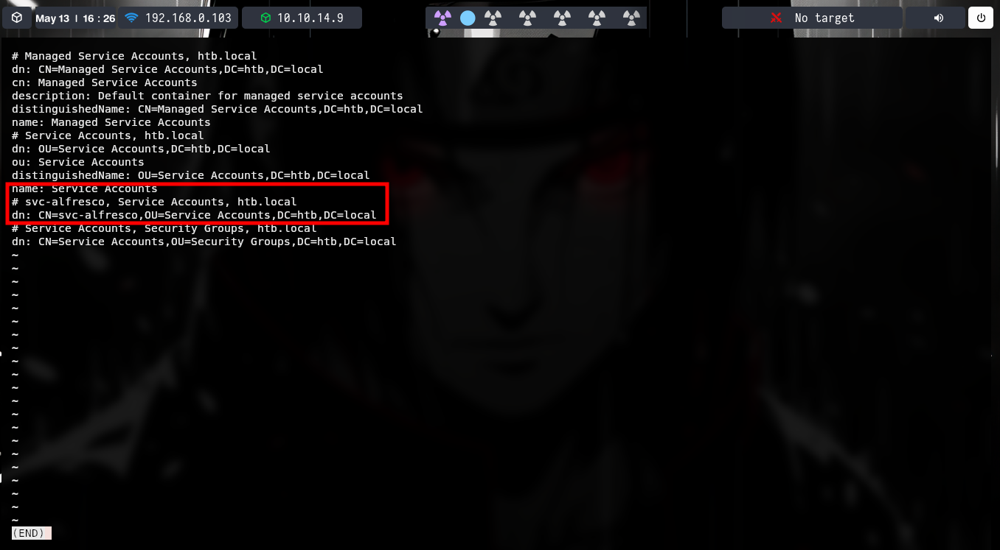

Enumerar é formar um mapa antes de testar hipóteses. Registre host, serviço, versão, resposta e origem da informação. Em ambientes corporativos, o mesmo nome pode aparecer em LDAP, Kerberos e SMTP.
01 / LDAP
Comece pela base do diretório e depois filtre objetos e atributos específicos. Ajuste dc=lab,dc=local ao domínio em teste.
ldapsearch -x -H ldap://dc.lab.local -b "dc=lab,dc=local"
ldapsearch -x -H ldap://dc.lab.local -D "usuario@lab.local" -W -b "dc=lab,dc=local" "(objectClass=user)" sAMAccountName memberOfProcure descrições como “Service account” e relacione o resultado a grupos e unidades organizacionais. Isso ajuda a diferenciar contas humanas, serviços e permissões delegadas.

Consultas ldapsearch
Enumerando serviço ldap:
- ldapsearch
ldapsearch -x -H ldap://192.0.2.10 -b "dc=htb,dc=local"
# list users with credentials
ldapsearch -x -H ldap://192.0.2.11 -D "usuario@lab.local" -w "SENHA_DE_LAB" -b "DC=vintage,DC=htb" "(objectClass=user)" sAMAccountName memberOf
conseguimos encontrar um usuario válido assim ex:
ldapsearch -x -H ldap://192.0.2.10 -b "dc=htb,dc=local" | grep -i "Service account" | less
02 / Kerberos
Use Kerbrute para validar nomes de usuário no domínio. Com GetNPUsers.py, verifique contas sem pré-autenticação Kerberos e registre os resultados associados ao escopo.
kerbrute userenum --dc dc.lab.local -d lab.local usuarios.txt
GetNPUsers.py lab.local/ -usersfile usuarios.txt -request -no-pass -dc-ip 192.0.2.10A observação sobre --downgrade depende do tipo de conta e das configurações do domínio. Não trate a opção como solução geral para hash não recuperada.
Kerbrute e GetNPUsers
- Kerbrute
# compilation
git clone [repo]
cd kerbrute
go build
kerbrute userenum --dc 192.0.2.13 -d domain.local users.txt
#caso capture uma hash e o hashcat nao consiga quebrar talvez consiga usar o downgrade dependendo da versao da hash
kerbrute userenum --dc 192.0.2.13 -d domain.local --downgrade users.txt
- ASREPRoasting com GetNPUsers.py
we can attempt an ASREPRoasting attack in order to extract a hash from user accounts that do not require pre-authentication.
while read p; do python3 GetNPUsers.py lab.local/"$p" -request -no-pass -dc-ip192.0.2.12 >> /home/samsx/hashs.txt; done < /home/samsx/Desktop/ctf/hackthebox/machines/easy/sauna/unames.txt
03 / SMB e Active Directory
Use NetExec para testar autenticação SMB e identificar permissões disponíveis. Só avance para coleta de hashes ou segredos quando essa etapa estiver no escopo do teste.
netexec smb host.lab.local -u usuario -p "SENHA_DE_LAB"Para uma análise reproduzível, anote o host, o domínio, o usuário de teste e a permissão observada, sem incluir senha ou hashes na publicação.
04 / SMTP e XMPP
Em SMTP, smtp-user-enum ajuda a comparar respostas para destinatários. Em XMPP, Pidgin é um cliente útil para observar autenticação e recursos expostos. Trate respostas ambíguas como hipótese.
Ao documentar, diferencie contas confirmadas de respostas ambíguas e evite listas de pessoas reais.
Cliente XMPP
Clientes
- pidgin
Enumeração SMTP
- smtp-user-enum
05 / Fuzzing de conteúdo web
Para rotas e parâmetros, veja o capítulo de Web Hacking. A regra permanece a mesma: partir de uma requisição conhecida, inserir FUZZ no ponto de interesse e comparar respostas.
Ver comandos de ffuf e feroxbuster ↗
Feroxbuster
feroxbuster --url https://dominio.com/ -w /usr/share/seclists/Discovery/Web-Content/raft-large-directories.txt -t 60 -C 400,500 -k
ffuf com requisição salva
Podemos passar um arquivo para o ffuf para ele fazer os requests.Basta pegarmos a request e adicionarmos o paramentro FUZZ onde queremos executar o fuzzing ex:
ffuf -request req.txt -w wordlist.txt